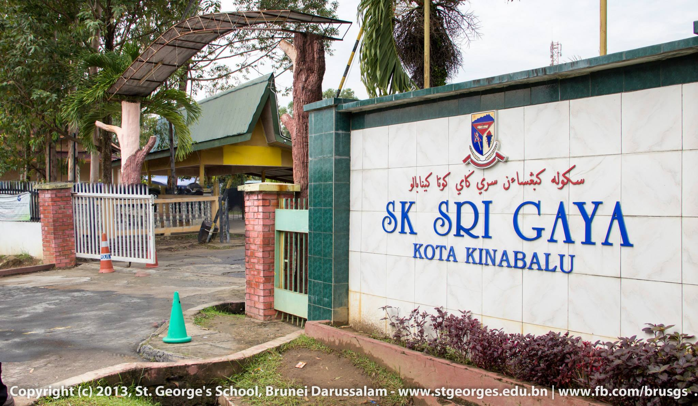
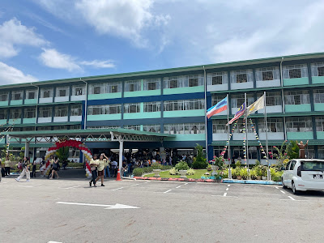

Academic Background
From finger painting in kindergarten to diving into deadlines during my diploma, my education has been a wild mix of learning, laughs, and a few "did that just happen?" moments.
In primary school, I mastered the essentials of reading, writing, and inventing top-tier excuses for missing homework. High school brought its own adventures, like cracking tricky equations, surviving group projects (with only a dash of chaos), those years taught me more than just academics, they taught me resilience... and a lot of other things actually.
By the time I got to my Diploma in Information Management, I was ready to tackle the world.. or at least spreadsheets. I dove headfirst into all kinds of fascinating subjects, balanced tight deadlines, and discovered that caffeine is, in fact, my best friend but every challenge came with a fresh perspective (and probably a playlist to match).
📚My Learning Journey📚
| Preschool & Primary School |
|  |
| SK SRI GAYA |
| High School |
|  |
| SMK ST. FRANCIS CONVENT |
Back to the Top